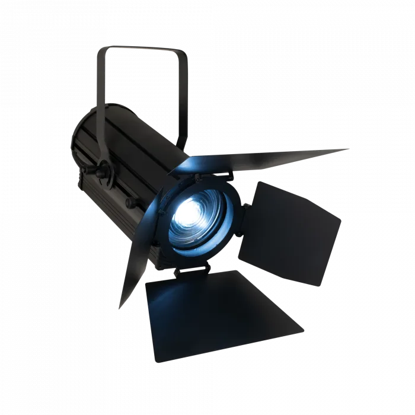

LED Fresnels
Showtec ACT Fresnel 150 RGBAL
The Showtec ACT Fresnel 150 RGBAL is a compact 150-watt RGBAL COB LED Spot with high CRI (>90) and silent operation, suitable for theatrical applications, museums, and exhibitions. It uses a 280 W RGBAL light source to optimise the colour output, allowing you to create a wide gamut of colours while maintaining a high CRI. This also allows it to achieve high light output even in single colours. The 280 W LED has 56 W per colour and a total combined maximum of 150 W. It projects a bright, soft beam of light within a wide, manually adjustable zoom range of 14°-36°. The ACT Fresnel 150 RGBAL can be controlled via DMX, RDM, and it is equipped with two knobs for manual colour and dimmer control. It is supplied with a barndoor and filter frame, allowing you to shape its output.
CategoryLED Fixtures
RangeLED Fresnels
Weight6.2 kg